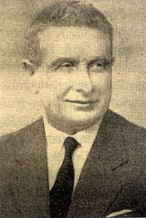

Eþref Edip Fergan (1882-1971)

II. Meþrutiyetin ilanýndan sonra Sýrat-ý Müstakim adlý haftalýk dergiyle yayýncýlýða baþlamýþtýr. Sebilürreþad’ýn da sahibidir. Uzun yýllar Ýslam’a ve Müslümanlara karþý yapýlan saldýrý ve tenkitlere yazýlarýyla cevap vermeye çalýþmýþtýr. Fikri istikametini bozmadan devam ettirdiði yayýncýlýk hayatýnda sýkýntýlarla karþýlaþmýþ, sansür ve kapatmalara maruz kalmýþtýr. Bediüzzaman ve talebelerine karþý yapýlan haksýzlýklarý eleþtirerek onlara destek olmuþ, yayýnlarýnda kendilerine yer vermek suretiyle bir çok kiþi tarafýndan tanýnmalarýna vesile olmuþtur. 1908 yýlýndan itibaren Bediüzzaman Said Nursi ile tanýþmýþ, birbirlerinden ayrý kaldýklarý zamanlarda bile irtibatý koparmayarak selamlaþmýþlardýr. Bediüzzaman bir mektubunda kendisi için, “kýrk seneden beri iman hizmetinde benim arkadaþým” ifadelerine yer vermiþtir.Eþref Edip, 1882 yýlýnda Selanik’de doðdu. Babasý Ýslam Aða ve annesi de Nefise Hanýmdýr. Okul eðitimine Serez’de bulunan Sýbyan Mektebinde baþladý. Daha sonra Rüþtiye Mektebini de Serez’de okudu. Bu arada Kur’an eðitimini gördü ve “Hafýz” oldu. Bununla birlikte dini dersler de aldý. Arapça derslerini okudu. Memleketinde bir yýl kadar Þer’i Mahkeme kâtipliði de yaptý.
Ýstanbul’a gelen Eþref Edip Hukuk Fakültesine girdi. Burada okuduðu süre zarfýnda Medrese eðitimini de alarak kendini yetiþtirmeye çalýþtý. Yavaþ yavaþ çevre edindi ve dönemin ünlü simalarýyla yakýn dostluklar kurdu. Bu dönemde cereyan eden fikri mücadele ve yazýlara ilgi duyarak yayýn iþiyle ilgilenmeye baþladý. Ýkinci Meþrutiyetin ilanýndan sonra Sýrat-ý Müstakim adýyla haftalýk dergi çýkardý ve böylece yayýncýlýk hayatý baþlamýþ oldu. Bu derginin yayýnlanmasýnda Mehmed Akif, Musa Kazým ve Mahmud Esad gibi düþünce ve fikir adamlarýnýn desteðini aldý. Derginin ilk sayýsý 27 Aðustos 1908 tarihinde yayýnlandý.
Eþref Edip, Ebül’ula Mardin ile birlikte 182 sayý çýkardý. Bu sayýdan itibaren Ebül’ula Üniversite hocalýðýna baþladýðý için tek imtiyaz sahibi olarak dergiyi yayýnlamaya devam etti. Bu arada derginin adýný da Sebilürreþad olarak deðiþtirdi. Batý yanlýsý yazarlarla fikri mücadelelere girerek Ýslami deðerleri savundu.
II. Meþrutiyetin ilanýndan sonra fikri alanda çok büyük mücadeleler yaþandý. Eþref Edip dergisinde, mütedeyyin ve Türkçü yazarlarýn yazýlarýna yer verdi. Birinci Dünya Savaþý sýrasýnda Ýttihat Terakkinin yanlýþ bulduðu bazý siyasi faaliyetlerini sert bir þekilde eleþtirerek muhalefette bulundu. Bu fikri mücadele ve farklý düþüncelerinden ötürü bir süre dergi yayýnýna ara vermek zorunda kaldý.
Yaklaþýk bir buçuk yýl yayýn hayatýna ara veren Eþref Edip, savaþ sonrasýnda iþgal altýnda bulunan Ýstanbul’da yeniden Sebilürreþad’ý yayýnlamaya baþladý. Milli Mücadele’nin baþlamasýndan sonra Anadolu Hareketine destek verdi. Mehmed Akif ile birlikte Milli Mücadelecilere arka çýktý. Ýþgal altýnda bulunan Ýstanbul’da derginin yayýnlanamayacaðý endiþesiyle Anadolu’ya geçti. Önce Kastamonu ve daha sonra Ankara’da dergisini yayýnlamaya devam etti.
Mehmed Akif’in, Anadolu’nun muhtelif yerlerinde yaptýðý vaazlarý dergisinde yayýnlayarak Milli Mücadele þuurunun güçlenmesine katkýda bulundu. Derginin Anadolu’nun ücra yerlerine ulaþtýrýlmasýnda askeri birliklerden istifade etti. Bunlar aracýlýðýyla insanlara ulaþtýrmaya çalýþtý. Ankara’da, Mehmed Akif ile Taceddin Dergahý’nda birlikte bulundu. Ýslam Þurasýný toplamak gayesiyle Bediüzzaman Said Nursi, Þeyh Ahmed Senusi ve Mehmed Akif ile birlikte fikir teatisinde bulundu.
Eþref Edip, Kurtuluþ Savaþý zaferinden sonra Ýstanbul’a geri döndü ve burada dergisini yayýnlamaya devam etti. Cumhuriyetin ilanýndan sonra Tek Parti iktidarý boyunca dine ve Ýslami deðerlere karþý takýnýlan tavra karþý fikri alanda mücadele etti. Yaptýðý muhalefetten ötürü dergisi sansüre uðradý. Þeyh Said hadisesi bahane edilerek çýkarýlan Takrir-i Sükun Kanunundan sonra çok sayýdaki yayýnla birlikte kendi dergisi de kapatýldý, tutuklanarak Ankara ve Diyarbakýr’da Ýstiklal Mahkemelerinde yargýlandý. Daha sonra beraat etti.
1932 yýlýnda Mýsýr’a giden Eþref Edip burada bulunan Mehmed Akif ile görüþtü. Buradan döndükten sonra Ýslam-Türk Ansiklopedisi’ni çýkararak yayýn hayatýna yeniden baþladý. Bu çalýþmayý, Milli Eðitim Bakanlýðý tarafýndan çýkarýlan Ýslam Ansiklopedisi’nde yer alan yanlýþlarý ortaya çýkarmak ve doðrularý göstermek amacýyla yaptý.
Eþref Edip 1948 yýlýnda Sebilürreþad’ý yeniden yayýnlamaya baþladý. Dergide Ali Fuat Baþgil, Cevat Rifat Atilhan, Kazým Nami Duru, Ömer Rýza Doðrul ve Hasan Basri Çantay gibi müelliflerin yazýlarýna yer verdi. Yýllarca CHP’ye karþý mücadele veren ve yanlýþlarýný eleþtiren Eþref Edip, 1950 öncesinde Celal Bayar’ýn, dini konularla ilgili sergilediði yanlýþ tutum ve davranýþlarýný da eleþtirdi. Bu eleþtirilerden oldukça etkilenen Celal Bayar, derginin kapatýlmasý maksadýyla dönemin baþbakaný Þemsettin Günaltay’a müracaat etti. Ancak, isteði kabul görmedi.
Eþref Edip, Sebilürreþad’ý 1966 yýlýna kadar yayýnlamaya devam etti. Bu süre zarfýnda yapýlan yanlýþlara, haksýz eleþtirilere þiddetle karþý çýktý. Din ve vicdan hürriyetine programlarýnda yer veren siyasi partileri bu giriþimlerinden ötürü destekledi. Diðer taraftan din ve vicdan özgürlüðüne getirilen sýnýrlama ve engelleri de sert bir þekilde eleþtirdi. Bu arada dergisinde Risale-i Nur ve Bediüzzaman Said Nursi ile ilgili yazýlara da yer verdi.
Risale-i Nur ve müellifine uygulanan baský ve tazyikler artarak devam ettiði dönemde Eþref Edip’in yayýnlarýnda kendilerine yer vermesi ve müspet manadaki tavrý takdir topladýðý gibi basýn yoluyla çok sayýda kiþinin Bediüzzaman ve Risale-i Nur’a ilgi duymasýna ve onlarý tanýmasýna vesile oldu. Bediüzzaman talebelerine yazdýðý bir mektubunda þu ifadelere yer vermektedir:
“Eþref Edip kýrk seneden beri iman hizmetinde benim arkadaþým ve Sebilürreþad'da makale yazan ve þimdi vefat eden çok kýymetli kardeþlerimin mümessili ve hakikî Ýslâmiyet mücahidlerinden bir kardeþimdir. Ve Nurun bir hâmisidir…” (Emirdað Lahikasý, s. 281). Bunun yanýnda, ayrý bulunduklarý zamanlarda, Ýstanbul’a giden talebelerine Eþref Edip’i ziyaret edip selamlarýný iletmelerini tembihleyen Bediüzzaman, ona verdiði deðeri müþahhas bir þekilde gösterdi. Selamý götüren ve kendisiyle görüþen Mustafa Sungur, Eþref Edip’in duyduðu memnuniyeti ve gösterdiði alakayý hatýralarýnda nakletmektedir (Necmeddin Þahiner, Son Þahitler 4, Ýstanbul 1994, s. 35-37).
1952 yýlýnda Bediüzzaman Said Nursi ile görüþen Eþref Edip, bu görüþmeden sonra duygu ve düþüncelerini kaleme aldý. 1908 yýlýndan beri tanýþtýðý, ancak, uzun zamandýr görüþemediði Bediüzzaman Hazretleriyle hasret gideren ve duygu dolu ifadelere yer veren Eþref Edip, “Devr-i Saadette, Müslümanlýðýn ilk kuruluþ zamanlarýnda olsaydý, Hazreti Peygamber, Kabe’deki putlarýn parçalanmasý vazifesini ona verirdi. Þirke ve putperestliðe o derece düþmandýr” demek suretiyle Bediüzzaman’ý veciz bir þekilde tavsif etti (Tarihçe-i Hayat, 1994, s. 541).
Eþref Edip 1971 yýlýnda vefat etti. Naþý Edirnekapý Þehitliðine defnedildi.
Eþref Edip, aralarýnda “Risale-i Nur Müellifi Bediüzzaman Said Nur, Hayatý Eserleri Mesleði” adlý eseri olmak üzere bir çok eser de kaleme aldý. Eserlerinden bazýlarý þunlar: Bediüzzaman Said Nur ve Nurculuk, Mehmed Akif Hayatý ve Eserleri, Ýnkýlap Karþýsýnda Akif-Fikret, Gençlik-Tan’cýlar, Misyoner ve Müsteþriklerin Yazdýklarý Ýslam Ansiklopedisi’nin Ýlmi Mahiyeti, Pembe Kitap, Çocuklarýmýza Din Kitabý, Kur’an-Garp Mütefekkirlerine Göre Kur’an’ýn Azamet ve Ýhtiþamý Hakkýnda Dünya Mütefekkirlerinin Þehadetleri.